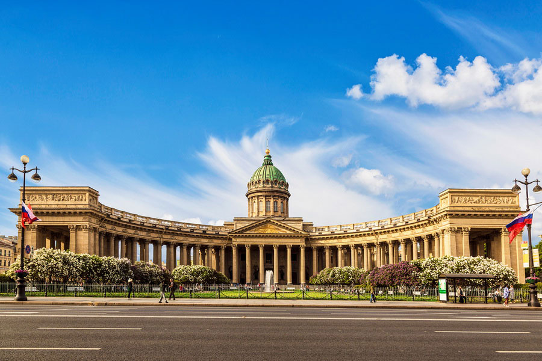
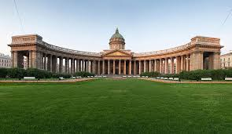
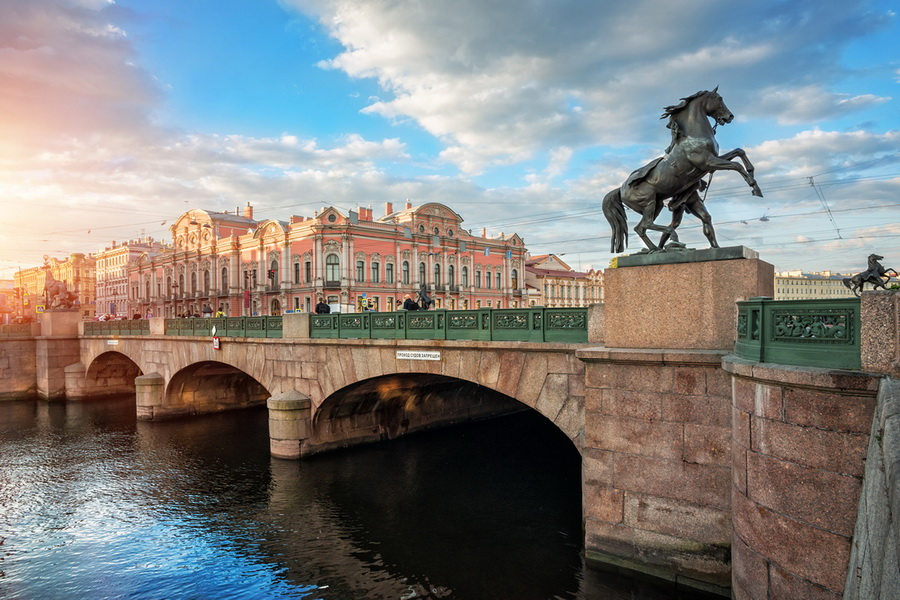
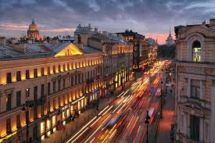
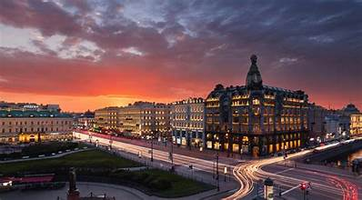

Nevsky Prospekt is the main avenue of Saint Petersburg and arguably the most famous street in all of Russia. Stretching 4.5 kilometers from the Admiralty building to the Alexander Nevsky Monastery, it is the cultural, commercial, and social heart of the city, lined with grand palaces, historic churches, luxury shops, museums, and vibrant cafes.
Laid out in the early 18th century as part of Peter the Great's vision for his new imperial capital, Nevsky Prospekt grew into the central artery of St. Petersburg's social life. By the 19th century it had become synonymous with Russian urban sophistication, immortalized in the writings of Nikolai Gogol, Fyodor Dostoevsky, and Alexander Pushkin. Its grand Baroque and Neoclassical facades reflect three centuries of imperial ambition and artistic patronage.
Walking the full length of Nevsky Prospekt takes visitors past some of St. Petersburg's greatest landmarks. The Kazan Cathedral dominates the midpoint with its sweeping colonnade. Nearby stand the Church of the Saviour on Spilled Blood, the Russian Museum, the Stroganov Palace, and the Anichkov Bridge with its famous horse-tamer sculptures. The avenue ends at the Alexander Nevsky Lavra, a working monastery and necropolis of Russian cultural figures.
Today Nevsky Prospekt buzzes day and night with locals and tourists alike. World-class hotels, theaters, bookshops, and the historic Gostiny Dvor department store line its pavements. During the famous White Nights in June, the avenue is particularly magical as the city glows under a midnight sun, drawing visitors from around the world for celebrations, boat tours, and outdoor events.


